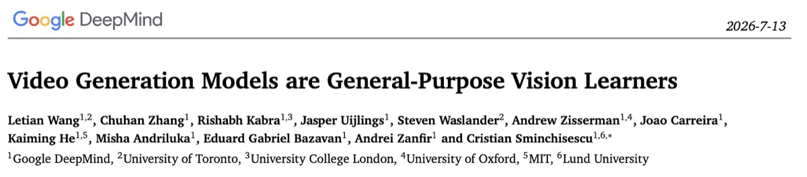
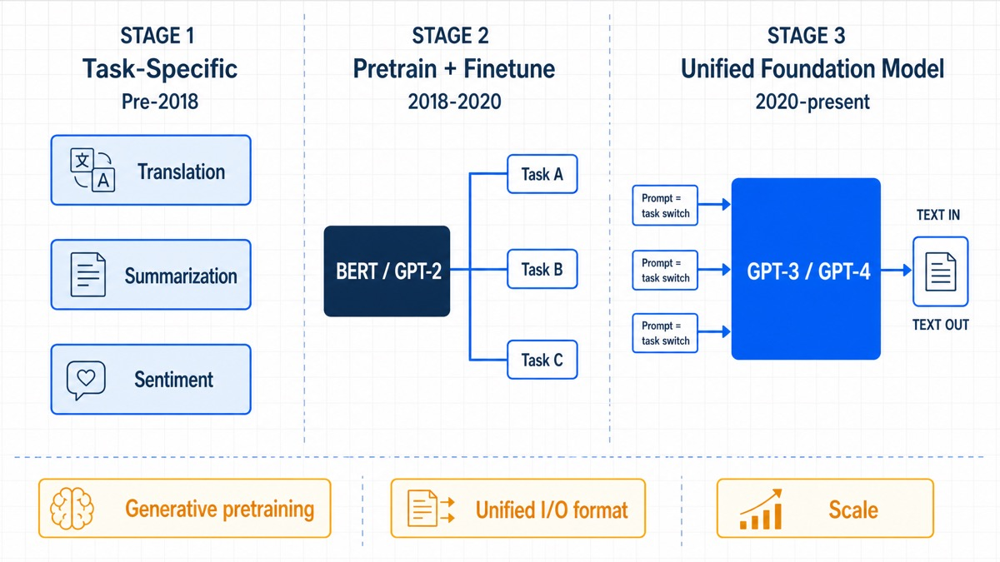
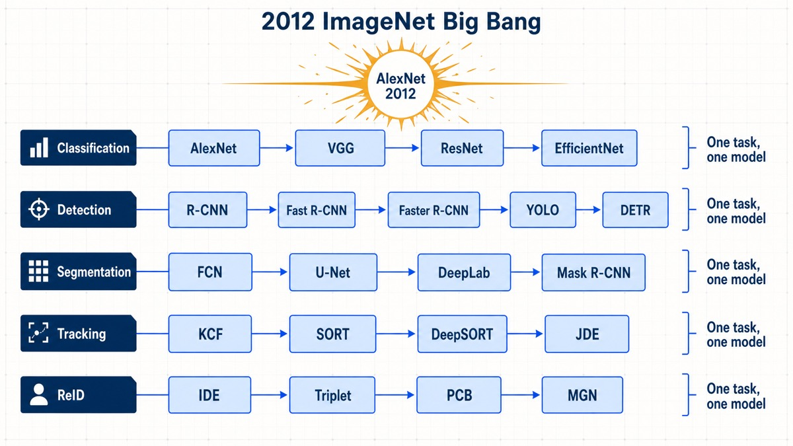
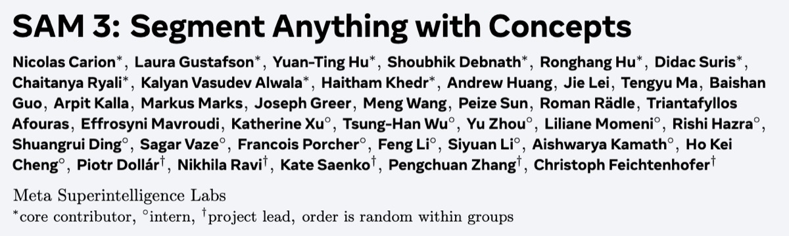
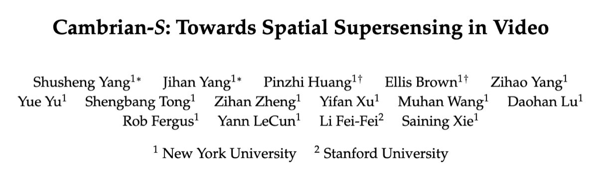
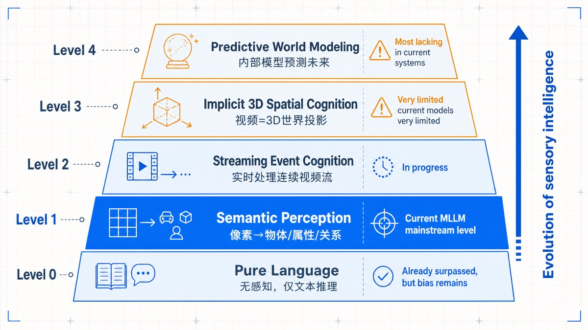
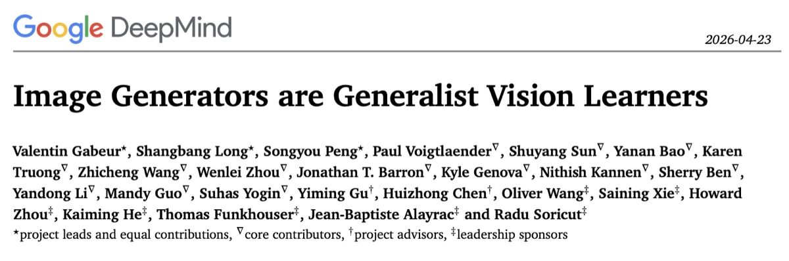
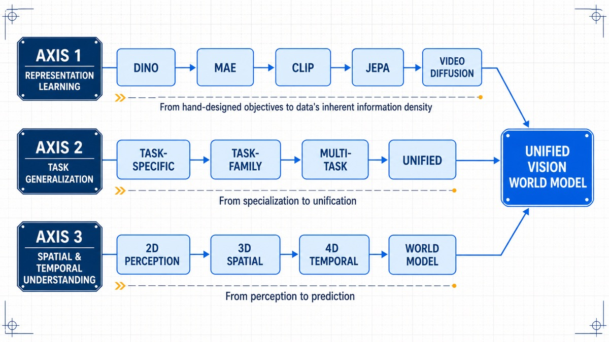

视觉智能的"GPT 时刻"——通用视觉智能的进化图谱
前面介绍了Google DeepMind 发布了一篇论文：《Video Generation Models are General-Purpose Vision Learners》。他们给这个系统起的名字叫 GenCeption。这篇论文传递了一个更重要的信号：计算机视觉正在经历它的"GPT 时刻"。

NLP 领域曾经有一场教科书式的范式转变：GPT 证明了"生成文本的能力天然蕴含理解文本的能力"。一个只做 next-token prediction 的模型，涌现出的语言理解和推理能力支撑起了整个 LLM 生态。几千个 NLP 任务被一个统一的 foundation model 取代。CV 领域，这一幕正在重演。
但这篇论文不是凭空出现的。从 LeCun 的 JEPA 到谢赛宁的 Cambrian-S，从李飞飞的 ImageNet 到 World Lab，从 SAM 到 DINO 到 Depth Anything——过去五年里，多条研究线从不同方向向同一个点收敛。
这篇文章，我想把这些线理清楚。不是为了写综述，而是为了看清一个更大的图景：通用视觉智能（General Visual Intelligence）的进化路线到底是怎样的？各条路线的逻辑关系是什么？我们走到了哪一步？
一、NLP 的蓝图：为什么 CV 注定要走这条路
在讨论 CV 之前，必须先看 NLP。因为它提供了一个清晰的进化模板。NLP 的进化经历了三个阶段，这个框架对理解 CV 至关重要：
阶段一：任务专用模型（Pre-2018）。翻译有一个模型，摘要有一个模型，情感分析有一个模型。每个任务独立设计架构、独立训练、独立部署。这跟 2020 年之前的 CV 一模一样——分类用 ResNet，检测用 Faster R-CNN，分割用 U-Net，跟踪用 SORT。
阶段二：预训练 + 微调（2018-2020）。BERT、GPT-2 出现。一个大模型先在无标注文本上预训练，再针对特定任务微调。一个 backbone 打多个任务，但每个任务仍然需要单独的 fine-tuning 和 task-specific head。这对应 CV 的 SAM/DINO/Depth Anything 时代——同一个 backbone，但每个任务有自己的 decoder 和 loss。
阶段三：统一 foundation model（2020-至今）。GPT-3/GPT-4 出现。一个模型，统一接口（文本进、文本出），处理几千种任务。指令微调（instruction tuning）取代了 task-specific fine-tuning。Prompt 是唯一的"任务切换开关"。这是 CV 正在进入的阶段——Vision Banana 和 GenCeption 就是这个阶段的产物。

为什么 NLP 能走到阶段三？三个关键条件：
- 生成预训练天然包含理解：next-token prediction 不只是"学会说话"，更是"学会世界知识"
- 统一 I/O 格式：所有任务都可以编码为"文本序列 → 文本序列"
- 规模化：大数据 + 大算力让 emergent behaviors 成为可能
CV 的挑战在于：这三个条件在视觉领域都不天然成立。生成像素不等于理解世界（问问 MAE 就知道了）。不同任务的输出格式差异巨大（深度图 vs 分割 mask vs 关键点坐标 vs 相机矩阵）。视频数据的规模需求远超文本，算力瓶颈更严重。
但过去几年，每一条线都在逼近这三个条件。GenCeption 的出现，不是因为某个人突然想到了一个好主意，而是因为多个方向同时成熟了。
二、阶段一：ImageNet 大爆炸与任务专用时代（2012-2020）
2012 年，AlexNet 在 ImageNet 上以巨大优势夺冠。这件事被公认为深度学习革命的起点。
但少有人讨论的是，这个"大爆炸"的两个关键要素：ImageNet 是李飞飞创建的，AlexNet 是 Alex Krizhevsky 设计的。一个解决了数据问题，一个解决了算法问题。这种"数据+算法"的双轮驱动模式，在 CV 此后的每一次范式转变中都在重复。
2012-2020 年间，CV 沿着任务专用路线高速发展：
- 分类：AlexNet → VGG → ResNet → EfficientNet
- 检测：R-CNN → Fast R-CNN → Faster R-CNN → YOLO → DETR
- 分割：FCN → U-Net → DeepLab → Mask R-CNN
- 跟踪：KCF → SORT → DeepSORT → JDE
- ReID：IDE → Triplet → PCB → MGN

每个任务有自己的模型、自己的损失函数、自己的评测基准、自己的顶会赛道。SOTA 此起彼伏，但范式始终没变：一个任务，一个模型。
三、阶段二：视觉基础模型的出现——SAM、DINO、Depth Anything（2021-2025）
CV 的"阶段二"尝试回答一个关键问题：能否为一个任务族（而不是单一任务）构建一个通用模型？
这催生了三个最具代表性的基础模型系列。
SAM 系列：分割的通用化（Meta, 2023-2025）
SAM（Segment Anything Model）是 CV 领域第一个真正意义上的"foundation model"——虽然它只做分割。
它的核心创新在于交互范式：通过点、框、mask 等 prompt 来指定分割目标，而不是为每个类别训练一个分类器。这实现了"一个模型，任意分割"。背后的技术支撑是 SA-1B 数据集——1100 万张图像、10 亿个 mask——以及一个可 prompt 的 transformer 架构。SAM 系列的意义不仅在于技术本身，更在于它证明了一个关键命题：当数据和模型足够大，视觉基础模型是可以成立的。它的局限也很明显：它只是"分割的基础模型"，不是"视觉的基础模型"。你没法让 SAM 估计深度，也没法让它做跟踪。

DINO 系列：自监督视觉特征（Meta, 2021-2025）
如果说 SAM 证明了"大模型+大数据"在视觉任务中的可行性，DINO 系列则探索了另一条更底层的路径：不用标注，能否学到通用的视觉特征？
DINO 系列的哲学是：好的视觉特征应该是通用的、任务无关的。它不是为任何一个特定任务训练的，但可以作为所有下游任务的基础。这有点像 BERT 在 NLP 中的角色——预训练出一个"对语言的理解"，然后各自微调。但和 SAM 一样，DINO 停留在阶段二：你需要在下游任务上加 task-specific head。
Depth Anything 系列：单任务深度泛化（HKU & TikTok → ByteDance-Seed, 2024-2025）
Depth Anything 走的是另一条路：把"深度估计"这一个任务做到极致通用。
它的策略非常巧妙：先用少量标注数据训练一个 teacher 模型，然后用这个 teacher 给海量无标注数据打伪标签，再训练一个 student 模型。从 V1 到 V2 到 V3，模型越来越大，数据越来越多，泛化能力越来越强。
四、阶段二的成就与瓶颈：
SAM、DINO、Depth Anything 代表了 CV 基础模型时代的最高水平。它们的共同特征是：在单一任务族内实现了通用化，但架构上仍然是任务专用的。 SAM 有 SAM 的 decoder，Depth Anything 有 Depth Anything 的 head，DINO 的输出是一个特征向量而不是一个可操作的视觉结果。
换句话说，阶段二解决了"一个任务族的通用化"，但没解决"跨任务族的统一化"。这就像 NLP 在 2019 年——有了 BERT，有了 RoBERTa，有了 XLNet，但还没有 GPT-3。每个模型都很强，但你要做情感分析还是得换模型，做翻译还是得换模型。
CV 的"GPT 时刻"，需要一个能同时处理深度、法向量、分割、姿态——甚至更多任务——的统一模型。而这，需要一个新的预训练范式。
五、空间智能：视觉理解的新维度（2025）
谢赛宁的 Cambrian-S：五级进化论
谢赛宁团队 2025 年底推出的 Cambrian-S，是过去几年对视觉智能发展方向最系统的一次论述。

他们从 Cambrian-1 出发（2024 年以视觉为中心的 MLLM 全面审视），但没有简单地做 Cambrian-2、3 的线性扩展，而是停下来追问根本问题：MLLM 的"LLM 中心"范式，到底适不适合感官建模？ 他们的回答是：不适合。LLM 方式的视觉理解停留在"给图片配文字"的层面，而真正的视觉智能需要的是对物理世界的连续感知和预测。
他们提出了感官智能的五级进化层级：
| 层级 | 能力 | 现状 |
|---|---|---|
| 0. 纯语言理解 | 无感知，仅文本推理 | 已超越，但偏见残留 |
| 1. 语义感知 | 像素→物体、属性、关系 | 当前 MLLM 主流水平 |
| 2. 流式事件认知 | 实时处理连续视频流 | 正在推进 |
| 3. 隐式 3D 空间认知 | 视频=3D 世界投影 | 当前模型非常有限 |
| 4. 预测性世界建模 | 内部模型预测未来 | 当前系统最欠缺 |

这五个层级不仅是一个分类体系，更是一个进化路线图。大多数 MLLM 还卡在 Level 1 和 Level 2 之间——它们能描述图像，但不理解空间，更不用说预测未来了。
李飞飞：从 ImageNet 到 World Lab
同一时期，李飞飞发表了一篇关于空间智能的文章《From Words to Worlds: Spatial Intelligence》，从更高维度勾勒了空间智能的未来图景。她指出，语言是一维的（线性序列），而世界是三维甚至四维的（空间+时间）。空间智能的复杂度远超语言模型，需要生成性、多模态性、交互性三大支柱。
李飞飞的角色在这整个进化路线中非常独特——她不是某一个技术路线的推动者，而是整个 CV 领域基础设施的建设者。ImageNet 解决了"看什么"，她创立的 World Lab（以及作为 Cambrian-S 的合作者）正在探索"怎么看世界"。
六、大统一：Vision Banana 和 GenCeption（2026）
2026 年，两篇来自 Google DeepMind 的论文，让上述所有路线开始汇聚。
Vision Banana：图像生成=通用视觉学习
2026 年 4 月，何恺明、谢赛宁等联署的 Vision Banana 论文首次用实验证明：图像生成预训练，可以同时超越所有专用判别式预训练方法。
做法极其优雅：取 Nano Banana Pro（Google 基于 Gemini 3 Pro 的图像生成模型），把所有视觉任务的输出参数化为 RGB 图像。语义分割？输出一张用颜色编码的 mask 图。深度估计？输出灰度图。法向量估计？输出 RGB 彩色图。然后做 instruction tuning——用少量数据教会模型"如何把任务格式化为 RGB 图像"。但 Vision Banana 有一个重要局限：它只处理图像。没有时间维度，没有 3D 几何，没有物理动态。

GenCeption：视频生成=通用视觉智能
三个月后，GenCeption 把这个范式从图像推到了视频。GenCeption 的核心思想直接借鉴了 NLP 的逻辑：
- NLP：大规模文本生成预训练（next-token prediction）→ post-training → 通用语言智能
- CV：大规模视频生成预训练（text-to-video diffusion）→ post-training → 通用视觉智能
技术实现上，GenCeption 取 WAN 2.1（一个预训练的文本到视频扩散模型），将其改造为单步前馈感知模型。这和 LeCun 的 JEPA 哲学形成了有趣的对照。LeCun 说"理解不需要生成"，GenCeption 说"生成就是最好的理解"。谁对？可能两者都对——在不同的层面：
- JEPA 对在：像素生成不是理解的充分条件（MAE 证明了你画得出来不代表你懂）
- GenCeption 对在：大规模视频生成确实迫使模型学到丰富的时空先验（因为你要生成的"下一帧"本身就包含了对 3D 几何、物理交互、对象恒常性的隐式建模）
换句话说，重要的不是"生成"这个动作，而是"生成目标所覆盖的信息维度"。视频生成的训练目标天然覆盖了时间、空间、物理、语义——这是一个比 JEPA 的潜空间预测更"密集"的监督信号。
七、整合：通用视觉智能的进化图谱
现在，让我们把这五年的六条主线——SAM/DINO 基础模型、JEPA 预测哲学、空间智能、Vision Banana、GenCeption——整合到同一张进化图谱上。
三条平行轴
轴一：表征学习（DINO → MAE → CLIP → JEPA → Video Diffusion）
"好的视觉表征从哪里来？"——这是 CV 最底层的问题。
- DINO/MAE：从无标注数据中自监督学习
- CLIP/SigLIP：从图文对中对比学习
- JEPA：从视频中预测潜空间表征
- Video Diffusion：从视频生成中学习时空先验（GenCeption 证明这一路径最强）
这条轴的演进趋势是从"人工设计学习目标"到"利用数据本身的信息密度"——视频生成目标的信息密度远高于自监督对比目标。
轴二：任务泛化（Task-Specific → Task-Family → Multi-Task → Unified）
"一个模型能做多少种任务？"——这是应用层面的核心问题。
- Task-Specific（2012-2020）：ResNet 做分类，U-Net 做分割
- Task-Family（2023-2025）：SAM 做所有分割，Depth Anything 做所有深度
- Multi-Task（2025-2026）：Vision Banana / GenCeption 同时做深度+分割+法向量+姿态+跟踪
- Unified（即将到来）：单一模型处理所有视觉任务，像 GPT-4 处理所有 NLP 任务一样
这条轴的演进趋势是从"专业化→通用化"，背后的驱动力是模型规模和预训练数据质量的提升。
轴三：空间/时间理解（2D Perception → 3D Spatial → 4D Temporal → World Model）
"模型对物理世界理解到什么程度？"——这是最根本的智能维度。
- 2D Perception（2012-2020）：物体识别、语义分割（Level 1）
- 3D Spatial（2023-2025）：深度估计、3D 重建、空间关系（Level 3）
- 4D Temporal（2025-2026）：视频理解、事件分割、运动预测（Level 3-4）
- World Model（正在探索）：预测未来、因果推理、物理规律（Level 4+）
Cambrian-S 的五个层级是这条轴上最清晰的路线图。GenCeption 在空间理解（深度、法向量、相机姿态）和个别时序任务上达到了专家水平，但说它具备"世界模型"还为时过早——它还不能真正地"预测未来"。

我们走到了哪里？
对照 Cambrian-S 的五级框架，今天的进展大致如下：
- Level 0（纯语言）：已完全超越
- Level 1（语义感知）：成熟，Vision Banana/GenCeption 在多个 task 达到 SOTA
- Level 2（流式事件认知）：正在突破，GenCeption 的 13.6 FPS 推理和 Cambrian-S 的事件分割机制都是关键进展
- Level 3（隐式 3D 空间认知）：GenCeption 在深度/法向量/相机姿态上的 SOTA 表现说明空间理解正在被注入统一模型，但仍不完整（Cambrian-S 的 VSI-Super 仍然未被完全攻克）
- Level 4（预测性世界建模）：这是我们当前的前沿。Cambrian-S 的 LFP head 和 JEPA 的潜空间预测都是早期探索，但离"像人类一样预测世界"还有很远
我们正处于从 Level 1+2 向 Level 3+4 跨越的关键时期。 统一架构已经出现（GenCeption），空间理解正在系统性地被注入（深度、法向量、姿态、3D 关键点），预测机制正在被探索（JEPA、LFP）。但一个真正的"通用视觉世界模型"——能持续感知、实时预测、跨域泛化——还没有出现。
八、结语：视觉智能的"寒武纪大爆发"
谢赛宁把他们的项目命名为 Cambrian——寒武纪。这不是随便起的。古生物学家把寒武纪称为"生命大爆发"的时代：在相对较短的地质时期内，几乎所有现生动物门类都出现了。
CV 领域正在经历它自己的寒武纪大爆发。在那之前的"前寒武纪"（2012-2020），只有简单的"感知生物"——每个任务一个模型，彼此独立，各自在自己的生态位上优化。
-
2023 年的 SAM、DINO、Depth Anything，像是"多细胞生物"的出现——开始有专门化的身体结构，但没有统一的神经系统。
-
2024-2025 年的 JEPA 和 Cambrian-S，像是"感觉器官"和"原始神经"的出现——预测能力、空间理解、事件分割，模型开始从"反应"转向"预期"。
-
2026 年的 Vision Banana 和 GenCeption，则是"脊椎动物"的原型——统一的骨架（单一架构）、统一的神经网络（共享权重）、统一的感官接口（文本 prompt 切换任务）。它还不够完善，神经系统还在演化，但它已经展示了"一个模型处理一切"是可能的。
接下来的进化方向是什么？Cambrian-S 的五级框架和李飞飞的空间智能蓝图，已经给出了答案。接下来可能出现的是：
- GenCeption + JEPA：把潜空间预测嵌入生成预训练框架，让模型既会"看"又会"预期"
- GenCeption + Agent：给统一视觉模型加一个决策层，从"被动分析"升级为"主动交互"
- GenCeption × Scale：更大模型 + 更多数据（真实+合成）→ 看是否会涌现新的 visual reasoning 能力
- Unified World Model：视觉+语言+行动在同一个潜空间中统一，类似 LWM（Large World Model）概念
NLP 用十年时间从 LSTM 走到了 GPT-4。CV 现在正处于它的"GPT-2 时刻"——统一架构已经验证，emergent behaviors 已见端倪，接下来的规模化将决定这场进化能走多远。这条路才刚开始。
参考文献（2026-08-02 经 arXiv/官方渠道逐一核实）：
- GenCeption：Video Generation Models are General-Purpose Vision Learners（Google DeepMind，arXiv:2607.09024，ECCV 2026）✅
- Vision Banana：Image Generators are Generalist Vision Learners（Google DeepMind，arXiv:2604.20329）✅
- Cambrian-S & Cambrian-1（NYU/Stanford，arXiv:2511.04670，2025）✅
- V-JEPA（Meta FAIR，ICLR 2025）；JEPA 物理直觉：Intuitive Physics Understanding Emerges from Self-Supervised Pretraining on Natural Videos（arXiv:2502.11831）✅；AdaJEPA（NYU + AMI/LeCun，arXiv:2606.32026）✅
- 李飞飞：From Words to Worlds: Spatial Intelligence is AI's Next Frontier（2025-11-10 长文）✅
- SAM/SAM2/SAM3（Meta，2023-2025；SAM3 = arXiv:2511.16719）✅
- DINO/DINOv2/DINOv3（Meta FAIR，2021-2025；DINOv3 = arXiv:2508.10104）✅
- Depth Anything V1/V2（HKU + TikTok，2024）；Depth Anything 3（ByteDance-Seed，arXiv:2511.10647，2025）✅
- Visual Planning：Visual Planning: Let's Think Only with Images（ICLR 2026 Oral，arXiv:2505.11409）✅
- ⚠️ DINO-world：未检索到该名称的独立论文，疑为 DINOv3 或 GroundingDINO 之误，待确认